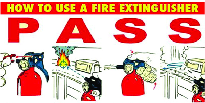
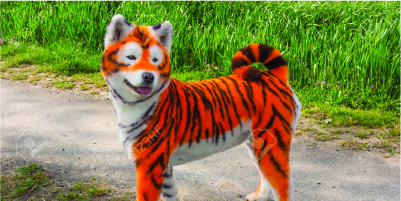
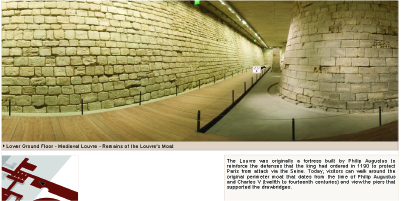
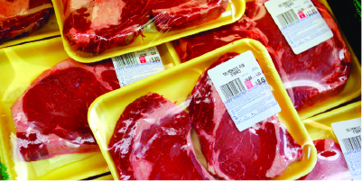
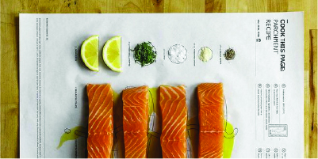
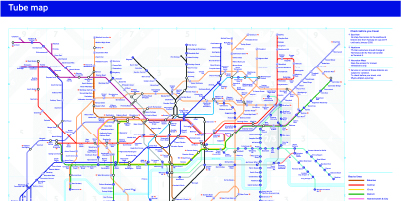
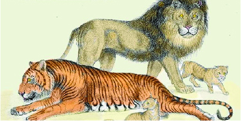
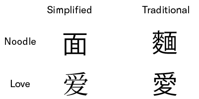
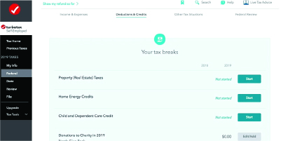

RESPOND
?
PROMPTS
IMAGES
QUESTIONS
How do we minimize the layer of a system so we can maximize a favorable outcome?
Why we don’t minimize the layer of a system so we can maximize a favorable outcome?









Why is this system easy?
Why is this system difficult?
Why is this system important?
Why is this system urgent?
Why is this system unnecessary?
Why is this system efficient?
Why is this system memorable?
How does this system change?
How does this system make possibilities?
How does this system prevent future errors?
How does this system doesn’t require overthinking?
How does this system make fewer possibilities?
How does emotion influence the ways we see this system?
How do we identify a good system from a bad one?
How does this system get from point A to point B?
What makes this system different from another system?
What also represents this system?
What tools can make this system?
When does this system become ambiguous
When does this system encounter contradictions?
When does this system become a question?
Where do we see this system intersecting with another system?
Where does this system exist?
I should write my thoughts here...